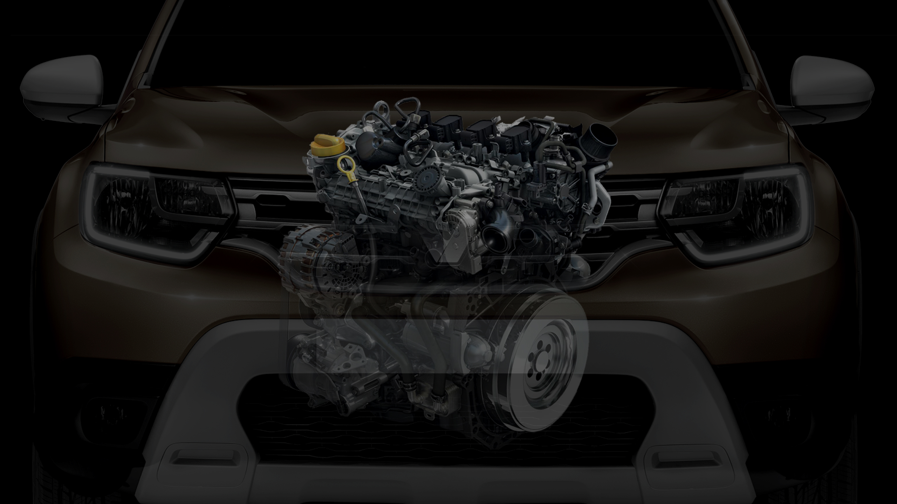
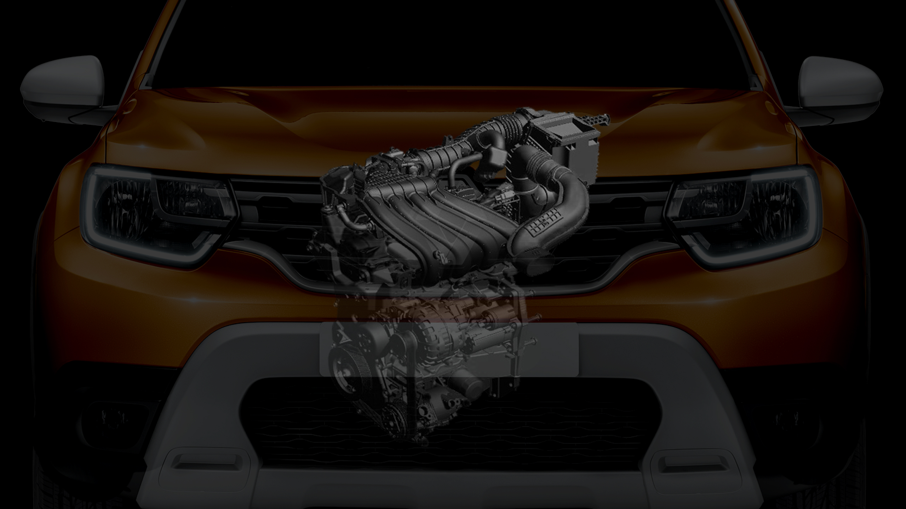

Максимально широкая линейка двигателей

-
Бензиновый турбодвигатель ТСе 150
- Главная новинка Renault DUSTER — бензиновый турбомотор ТСе 150,
который обладает самым высоким в линейке крутящим моментом 250Нм, который доступен
уже на низких оборотах, а также великолепной экономичностью — всего
6,7л/100км в смешанном цикле. Этот двигатель прекрасно подходит для любых условий,
в том числе и длительной эксплуатации на бездорожье. Он доступен
с полным приводом в паре как с 6-ступенчатой механической коробкой
передач, так и с новой автоматической трансмиссией CVT X-Tronic, которая
получила специальный алгоритм работы гидротрансформатора.
Допустимые комбинации:
-
4×4 и 6-ступенчатая МКП
-
4×4 и автоматическая трансмиссия CVT X-Tronic

-
Бензиновый двигатель 1,6
- Один из самых массовых двигателей в России был модернизирован для
версии с полным приводом, благодаря чему мощность возросла до 117 л.с.
Двигатель обеспечивает оптимальное соотношение цены, динамики, проходимости
и экономичности.
Допустимые комбинации:
-
4×4 и 6-ступенчатая МКП (117 л.с.)
Турбированный Tce 150
Бензиновый 1.6